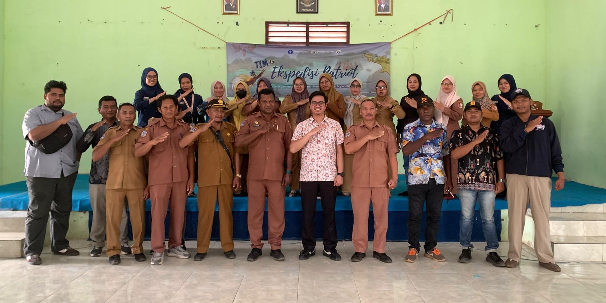

Selamat datang di
Kampung Marga Mulya
Distrik Semangga · Kabupaten Merauke · Papua Selatan

Kabar kampung
Berita tentang Marga Mulya
Diperbarui otomatis dari media daring
Jelajahi website
Semua informasi kampung
Profil Kampung
Sejarah, identitas wilayah, pemerintahan, potensi, dan dokumentasi Kampung Marga Mulya.
Profil kampung
Mengenal Marga Mulya
Visi
Misi
Batas wilayah
Prestasi kampung
Penghargaan yang diterima Kampung Marga Mulya. Ketuk untuk melihat piagam dan penjelasannya.
Pemerintahan kampung
Susunan organisasi kampung
Ketuk salah satu bagian di bawah untuk melihat susunannya.
Struktur organisasi pemerintah kampungKepala kampung, sekretaris, kepala urusan, dan kepala seksi
Ketuk kotak jabatan untuk melihat tugas pokoknya.
Ketua RW dan Ketua RTRukun warga dan rukun tetangga
Badan Musyawarah Kampung (Bamuskam)Pimpinan dan anggota Bamuskam
Lembaga kemasyarakatanPKK, Karang Taruna, dan lembaga lainnya
Potensi kampung
Pertanian, ternak, dan usaha warga
Komoditas dan usaha unggulan
Luas tanam per komoditas
Lihat luas dan jumlah petani
Populasi ternak
Penggunaan lahan yang tercatat
Sarana usaha warga
Kegiatan Ekspedisi Patriot
Video profil
Video profil kampung
Galeri
Kehidupan di Marga Mulya
Data Kampung
Kependudukan, sarana prasarana, dan fasilitas umum Kampung Marga Mulya menurut monografi kampung.
Data kampung
Kependudukan
Laki-laki dan perempuan
Satu ikon mewakili sekitar 100 jiwa.
Kelompok usia
Tingkat kesejahteraan keluarga
Lihat dalam grafik batang
Sekolah dan tenaga kesehatan
Mata pencaharian
Lihat semua 15 jenis pekerjaan
Pendidikan terakhir
Lihat rincian per jenjang
Suku / etnis
Lihat semua 10 suku
Agama
Lihat dalam grafik batang
Fasilitas umum
Sekolah, rumah ibadah, kesehatan, dan layanan warga
Fasilitas di Kampung Marga Mulya dan fasilitas terdekat di Distrik Semangga. Ketuk kartu untuk melihat lokasinya di peta.
Lokasi fasilitas di peta
Memuat peta…
Status data fasilitas
Transparansi
Anggaran kampung, status perkembangan desa, dan rencana pembangunan (RPJMK).
Transparansi anggaran
APBKam
Pendapatan per kelompok
Ketuk kelompok untuk melihat rinciannya.
Belanja per bidang
Ketuk bidang untuk melihat sub bidang dan kegiatannya.
Belanja per jenis
Pengelompokan menurut jenis belanja: pegawai, barang dan jasa, modal, dan tak terduga.
Belanja menurut sumber dana
Asal dana yang membiayai setiap kegiatan.
Pembiayaan
Dana yang dikelola lembaga kampung
Indeks Desa (dulu IDM)
Status perkembangan kampung
Riwayat status
Perencanaan pembangunan
RPJMK Kampung Marga Mulya
Landasan
Dasar hukum
Bidang dan rencana kegiatan
Ringkasan usulan kegiatan per bidang dalam Bab IV RPJMK.
Jelajah
Peta kampung serta wisata dan kuliner dari Semangga sampai Kota Merauke.
Peta kampung
Peta Batas Kampung Marga Mulya
Peta resmi batas wilayah dari Pemerintah Kabupaten Merauke (Dinas Pemberdayaan Masyarakat dan Kampung). Pilih peta interaktif untuk melihat batas wilayah, titik kartometrik, dan letak fasilitas umum di atas citra satelit peta tersebut.
Memuat peta…
Daftar 18 titik kartometrik batas kampung
Wisata & kuliner sekitar
Jelajah Semangga, Tanah Miring, hingga Kota Merauke
Tempat wisata, agrowisata, pemancingan, kolam renang, dan kuliner dalam jangkauan sekitar 1–2 jam dari Kampung Marga Mulya. Jarak dan waktu dihitung dari pusat kampung mengikuti rute jalan.
Memuat peta…
Jarak dari Kampung Marga Mulya
Ketuk nama tempat untuk melihatnya di peta.
Layanan & Kontak
Layanan administrasi, kontak kantor kampung, dan media sosial.
Layanan warga
Layanan administrasi
Jenis surat yang dilayani Kantor Kampung Marga Mulya. Persyaratan dan lama proses ditampilkan setelah ada keterangan resmi dari kantor kampung.
Kontak
Kantor Kampung Marga Mulya
Media sosial kampung
Tentang website ini